IT
Explore Web, Mobile and Design directions. Technician and technician-programmer are qualifications listed separately.
Explore IT →Explore IT and Accounting and Audit at JIHC. Find a study direction that fits your interests.
Taraz, Kazakhstan
Based in Taraz, JIHC offers two main fields: IT and Accounting and Audit. Compare what you can study, then contact the college about applying.
Get to know JIHC →Explore IT directions and qualifications, then learn about Accounting and Audit.
Explore Web, Mobile and Design directions. Technician and technician-programmer are qualifications listed separately.
Explore IT →The field focuses on financial records and checking their accuracy.
Explore Accounting and Audit →Choose a field, then contact JIHC to confirm eligibility, intake availability and the official document checklist.
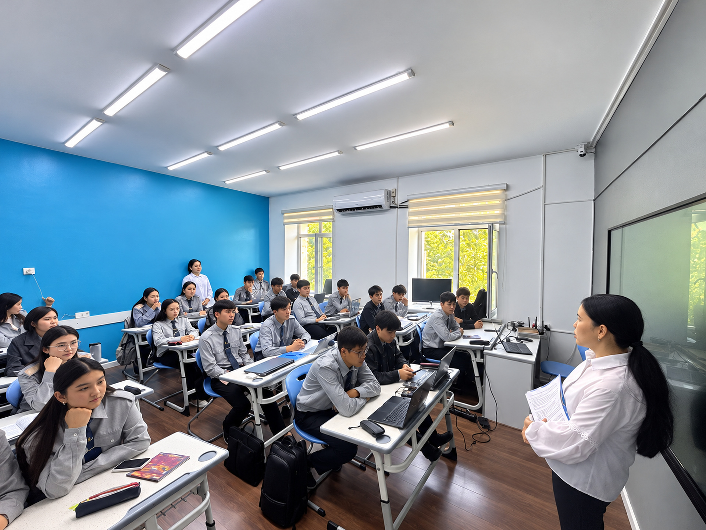
See moments from JIHC clubs, reading activities and college gatherings. Ask which groups are active and how to take part.
Student projects and campus life, with examples from JIHC’s official posts.
An official JIHC post features a student project. Open the post for the college’s description of the work.
View the student project post ↗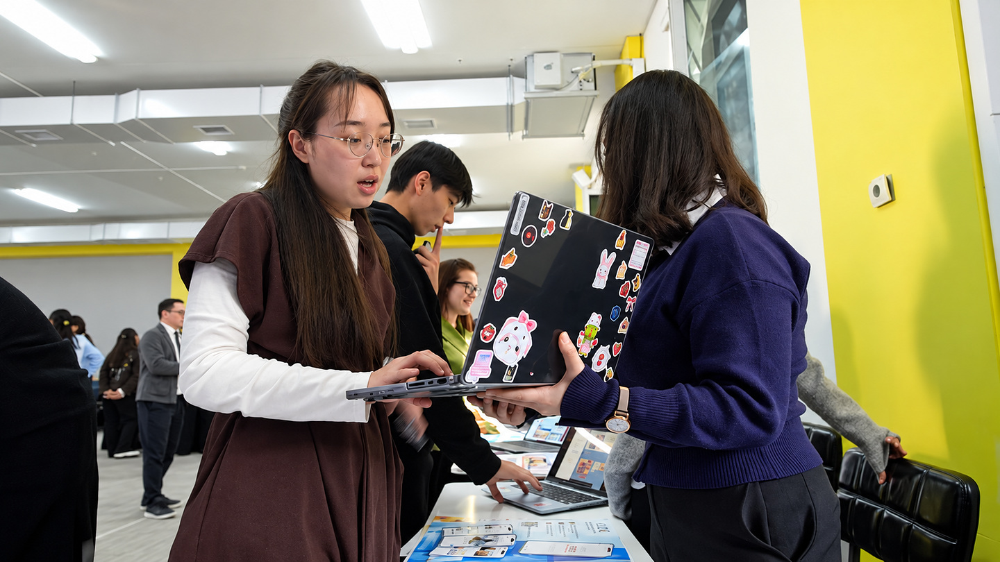
A JIHC post shows students sharing design work. Open it for the college’s account of the activity.
View the design post ↗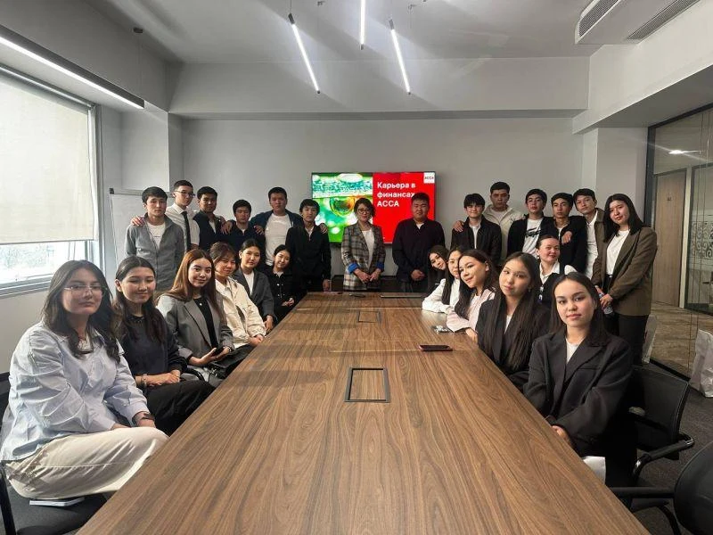
JIHC students visited ACCA to learn about professional qualifications and careers in finance and accounting.
Read about the visit ↗Clubs, music, shared projects and time together.
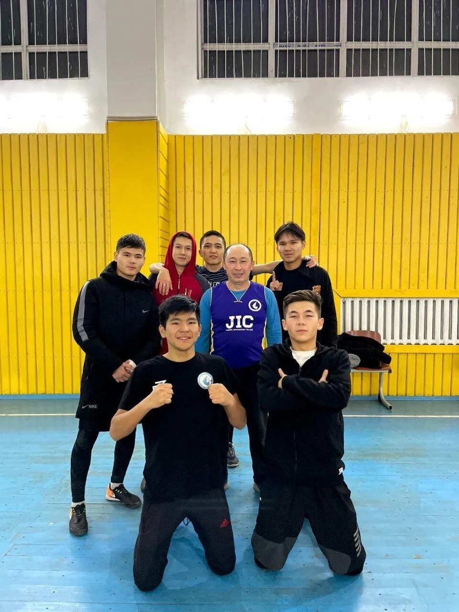
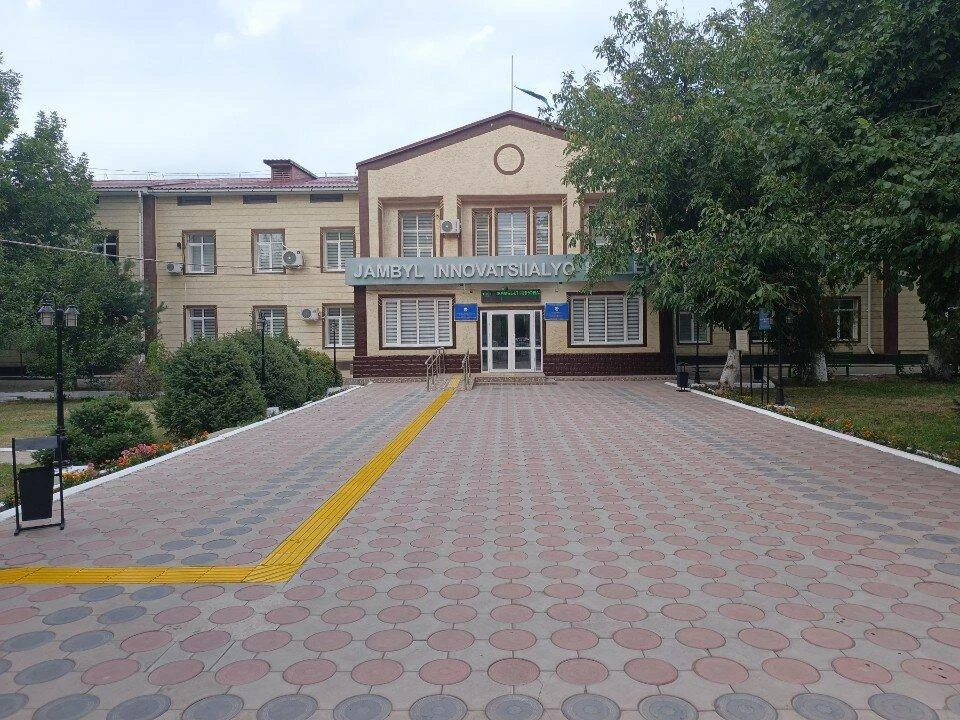
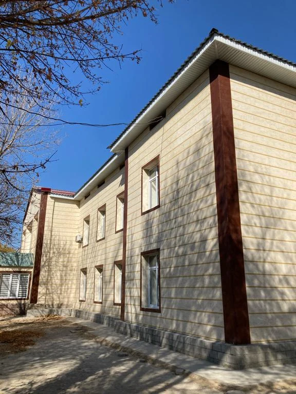
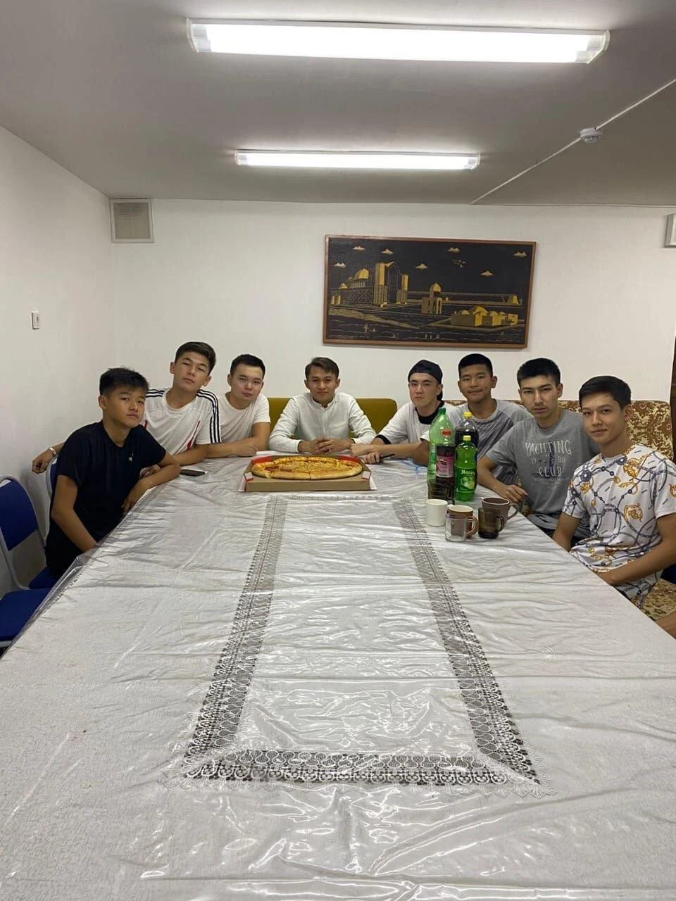
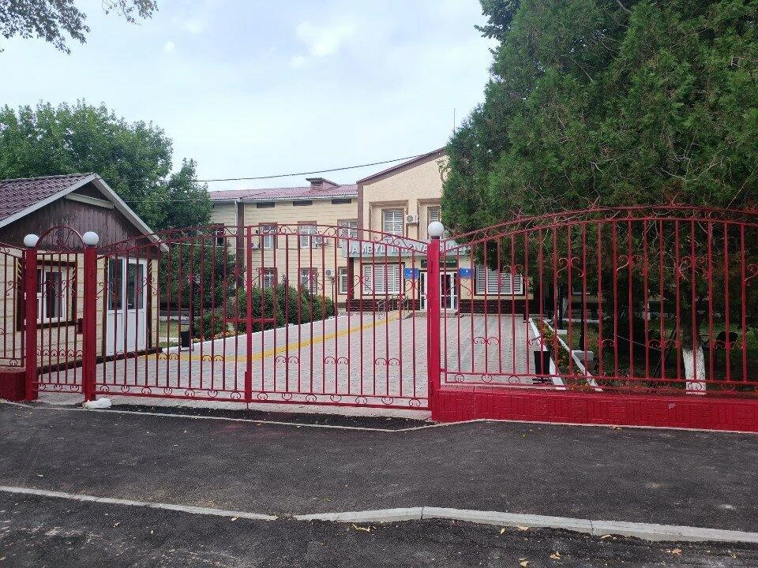
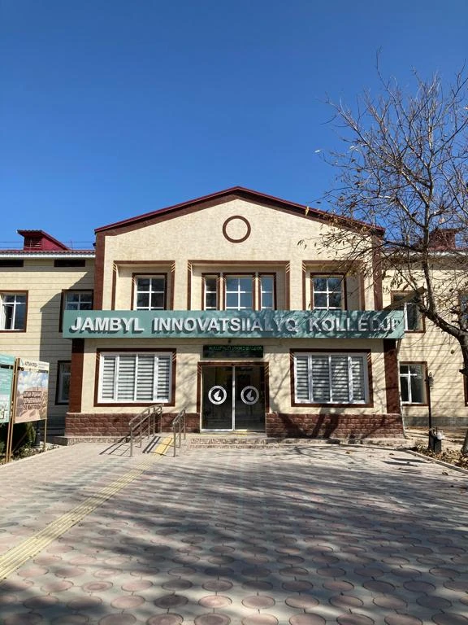
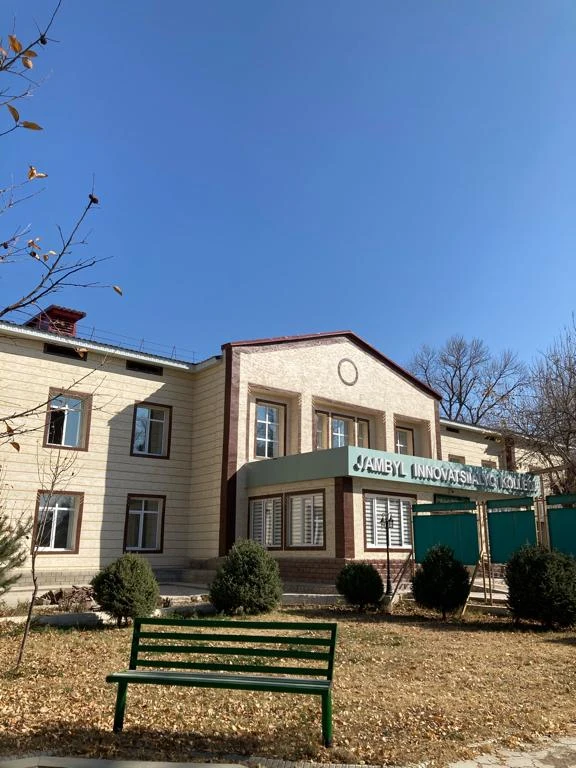
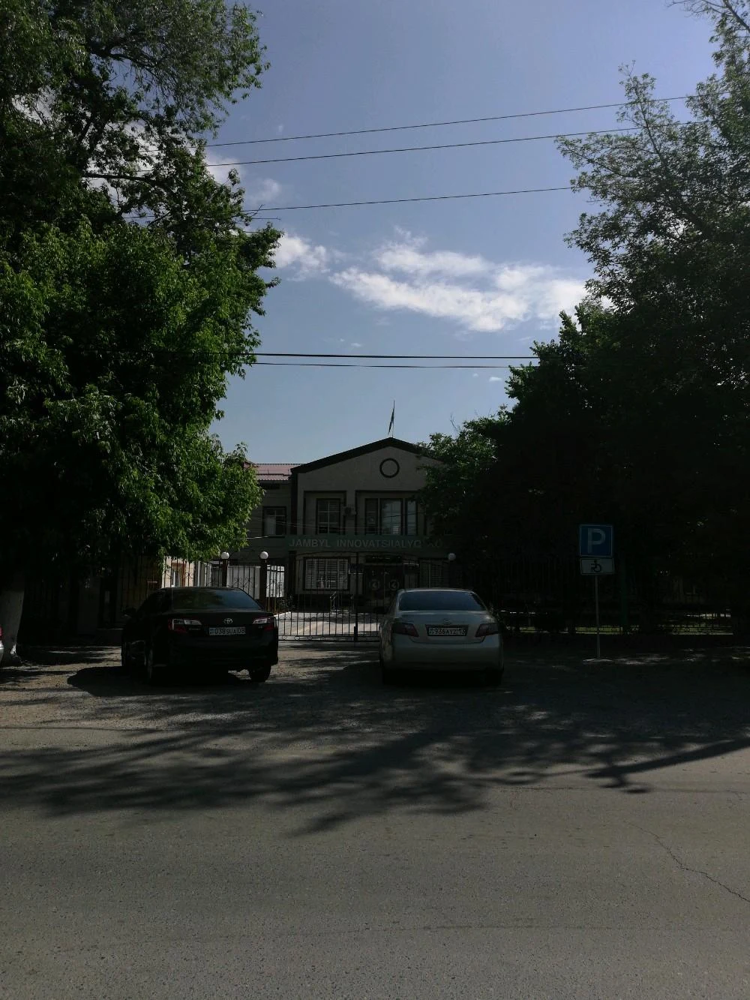